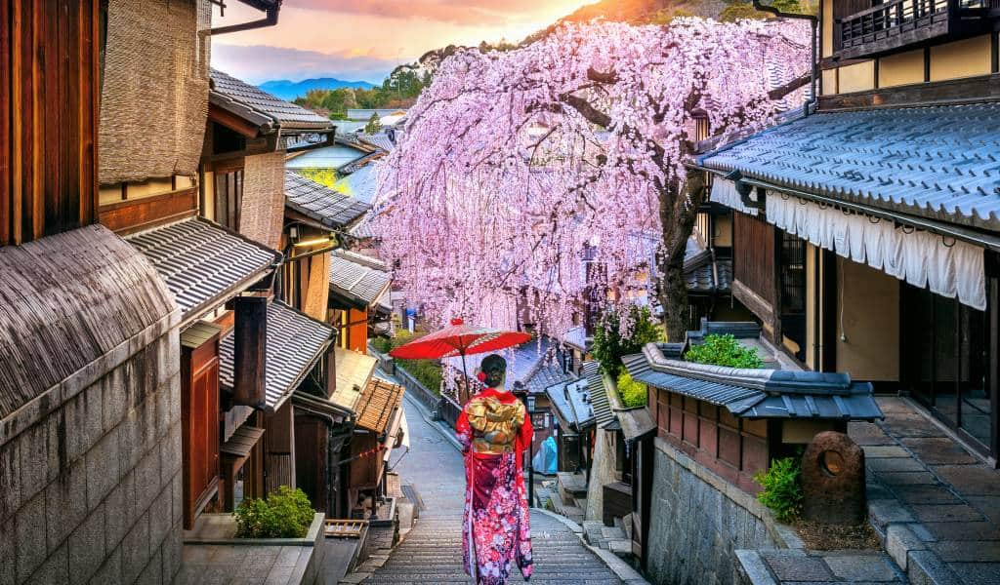
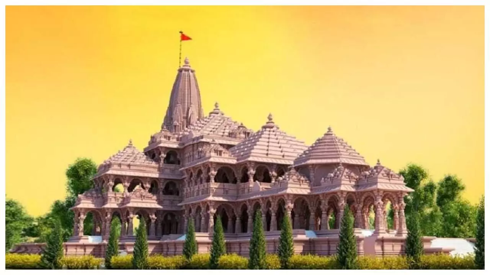
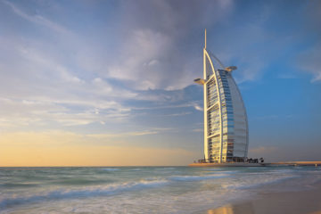
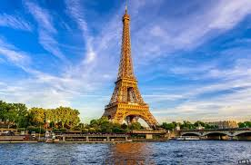
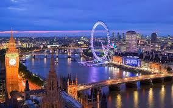
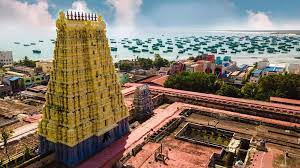

Ayodhya
Ayodhya is also known as Saket and was the capital of the ancient Kosala Kingdom. It is mentioned in many legends and stories, including the epic Ramayana. It is the place where the Ramayana comes alive, where history whispers its tales, and where exciting attractions wait to be explored. Ayodhya is a special haven

Dubai
Dubai is a city of skyscrapers, ports, and beaches, where big business takes place alongside sun-seeking tourism. Because of its large expatriate population, it feels like a Middle Eastern melting pot, and the atmosphere is generally tolerant.Religious affiliations are not a prominent aspect of city life.

Paris
Paris is famous for its dedication to the arts. The French state has a strong record on supporting the arts—literary, musical, visual, or otherwise. Its capital has been the crucible for numerous artistic movements including Impressionism, Cubism, and Art Deco.The French Capital was called Paris, the City of Love.



Leh
Located in the Ladakh region of Jammu and Kashmir, Leh is known for its stunning scenic locales, Buddhist temples and pristine environment. Due to the strong influence of Tibetan Buddhism, Leh is also known as Little Tibet or the Land of Lamas.t was called Maryul or low land by some Kha- chumpa by others

Lakshadweep
akshadweep is renowned for its unspoiled beaches, blue sea, and exotic islands. The archipelago is a great destination for those on a quest for peace and tranquillity or who are keen on getting a thrill by taking on some adventure.The main languages of Lakshadweep are Malayalam and Mahl.